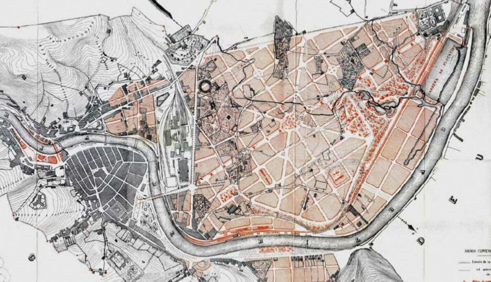
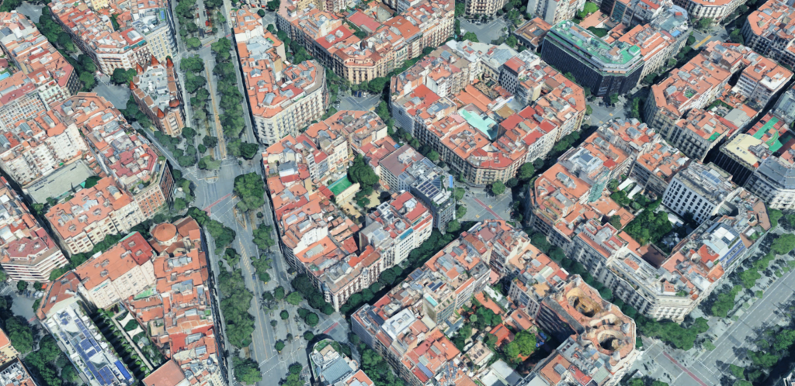
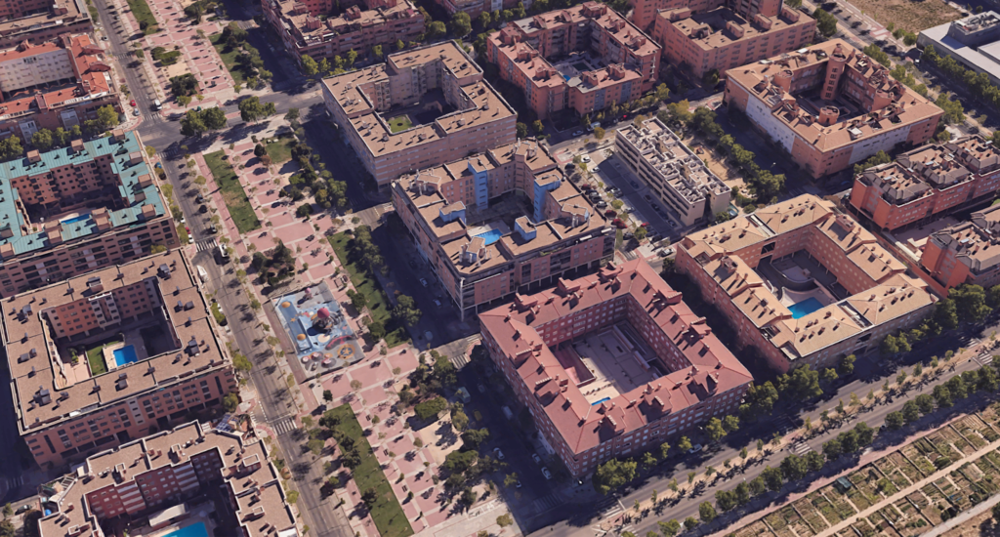

Spain's cities are unusual. They are much denser, tighter, and more deliberate than other European cities, let alone North American ones. They reject picket fence for apartment block and choose balcony over front lawn. Two thirds of Spaniards live in flats, against 41 percent of Poles, 36 percent of the French, and just 10 percent of the Irish.1 Of the remaining third, most live in terraced rowhouses. In Spain's cities, over four fifths of people live in an apartment. At the edge of Madrid or Valencia, dense mid-rise blocks stand beside open countryside without sprawl in between, something that has almost never happened in an English-speaking country, and that has been rare in France or Germany for a century.
You've likely felt the result if you've ever been to a Spanish city. Spain's settlements have some of Europe's lowest per capita transport emissions, in part because about 70 percent of trips in Madrid and Barcelona are made on foot, tram, or metro. Almost every neighborhood is mixed use; almost all urban Spaniards live in the 'fifteen-minute cities' that seem like remote ideals in most affluent societies. Add nationwide life expectancy higher than almost anywhere else in the EU, and you can make out an urban form that keeps carbon, commute times, and hypertension in check without asking citizens to sacrifice home ownership.
This urban form arose in part by accident. Spain became rich enough for suburbia very late, after the worst problems with premodern urban density had already been solved,2 and only shortly before planners around the world started to see urban density as desirable. But there are many countries that became rich after Spain and sprawled out. Apart from timing, Spain's cities benefited from sophisticated public and private planning efforts that helped them overcome many of the collective action problems that prevent dense building. Spain shows that suburbanization is not the inevitable corollary of affluence, and that multiple futures are possible for the cities of Asia and Latin America, if they take the right steps.
Preserved by poverty
Spain was one of the last countries in Western Europe to industrialize. This profoundly shaped how its cities developed. During the nineteenth century, the Industrial Revolution transformed the cities of Northern Europe and North America. They grew enormously, often becoming ten, twenty, or even a hundred times larger than they had been at the beginning of the century.
An emerging middle class also created a new demand for low-density suburbs. In Britain and North America, huge suburbs of single-family homes emerged, and by 1914 most British and American city-dwellers were living in a townhouse of some kind. This process had also begun in France, Germany, and Austria-Hungary, where cities came to be orbited by affluent 'villa colonies' of detached houses, connected to the main city by railways.
Spain, like other Mediterranean countries, was less affected by these changes. In the 1880s, the population of Spain was still very rural: only 26 percent of Spaniards lived in towns of over 5,000 people, against 56 percent in the United Kingdom and 43 percent in Belgium. Spaniards were far poorer than northern Europeans, meaning that fewer of them were able to afford a single-family suburban home. But although they were materially poor, Spanish cities were relatively highly planned by the standards of the time. Municipal governments drew up street plans and required landowners to implement them, creating well-designed street networks with generous endowments of public space. The Eixample district that is now Barcelona's city center is the most famous example, but similar schemes governed the growth of nearly all major Spanish cities.
Spanish cities were also constrained in their footprints (and thus forced to stay dense) by a lack of public transportation. In 1914, the tram routes of Chicago were about as long (around 1,000 kilometers) as those of all the cities of Spain put together. The commuter suburbs that many European and American cities were rapidly developing at this point were impossible in Spanish cities, where walking was the primary means of transportation. Later, Spain was slower to adopt cars. Spain had just 8 vehicles per 1,000 people in 1930, versus about 216 in the United States and 37 in France.3 Over the following decades, car ownership continued to be suppressed by high taxes on imports and by unsuitable roads. The dispersed urbanism that cars were beginning to engender in North America remained unthinkable.

This situation remained fundamentally unchanged well into the twentieth century. Although Spain enjoyed some economic growth in the 1910s and '20s, it was plunged back into poverty by the Civil War and the autarkic policies of the early dictatorship, a disastrous attempt to make the country economically self-reliant. In 1950, Spanish incomes per person resembled those of Senegal or Cameroon today, though of course it had a much greater built-up stock of wealth than those countries do. Its cities remained remarkably old-fashioned, with a housing stock consisting almost entirely of rented flats and car ownership restricted to a tiny elite. Footage from the mid-1950s shows cities where most journeys were made on foot, and most freight was transported with donkeys and hand carts. Almost half the population still lived in rural areas.
Spanish cities remained old-fashioned in another less conspicuous way. In continental Europe, robust legal structures enabling condominium ownership, where residents own a flat but share ownership of the underlying building, emerged only in the mid-twentieth century. Before then, flats were overwhelmingly rented. During the First World War, most European countries implemented rent controls, which lasted until the late twentieth century. In France and Germany, these largely destroyed the viability of 'build to let', as building owners could no longer recoup the cost of their investment. Given the weakness or absence of legal structures for multiple ownership of buildings, this meant the private sector had no easy way to build flats.
As a result, homebuilding either switched over to single-family housing or was taken over by the state. The densely massed blocks favored by the private build-to-let sector, which seek maximum rental income per square meter, were replaced immediately with small owner-occupier houses, or with whatever housing typologies government officials happened to favor. By 1930, Paris had extensive suburbs of downmarket single-family owner-occupier houses, while Berlin had acquired its famous Siedlungen, modernist social housing estates built by the municipal government at low to medium densities.
In Spain, the housebuilding sector remained basically nineteenth-century in character: the switch to single-family housing or public housing estates never occurred. The Spanish government did introduce rent controls in 1921, but it was slow to enforce them effectively, and it cushioned their impact with subsidies for developers. This meant that build-to-let apartments remained dominant until a form of condominium ownership (propiedad horizontal) was introduced in 1960. Urban Spain thus still had few owner-occupied houses or modernist public housing projects in the mid-twentieth century, continuing to prefer the same dense block structures that the continental build-to-let sector had chosen since the 1700s.
Nonetheless, beneath the surface, modernity had already changed urban life in Spain. Premodern cities were extremely unhealthy places, chiefly because of disease and water contamination. Their residents incurred what demographers call the 'urban penalty', a substantially reduced life expectancy as a result of living in cities. This was one of the factors that drove the wealthy to move to the suburbs in the cities of America and Northern Europe.
Modern drainage, piped water and vaccination ended the urban penalty in the early twentieth century. Nationally, death rates ran about 31 per 1,000 in cities versus 27 per 1,000 in Spanish rural areas in 1860, but the gap shrank steadily and had almost converged by 1930. Violent crime rates, high in nineteenth-century Spain, also fell rapidly. By the time economic growth really took off, between the 1950s and the early 2000s, some of the main push factors that had driven suburbanization elsewhere had faded away.
Spanish cities today
Spain's late development affected its urbanism in another way. Around the world, planning orthodoxy changed drastically in the late twentieth century, coming to prize the density and mixing of uses that it had long rejected. This shift began in the 1960s with the classic work of writers like Jane Jacobs, Jan Gehl, and Aldo Rossi, and by the 1990s a preference for dense urban spaces and dislike of suburban sprawl had become the established view in all countries.

In most countries, however, the legacy of the preceding decades had created powerful path dependencies difficult to reverse. The dense mixed-use cores of Northern European and American cities were surrounded by vastly larger, low-density, car-dependent suburbs. There are no tram or metro lines running through them which can be extended, no walkable street networks to join onto, and no nearby main streets to make use of and support. Sites at the urban periphery really are car dependent, and it really is difficult to build them at higher densities.4
In Spain, by contrast, traditional urbanism had only just begun to fray at the time when density came back into fashion around the world. The Francoist authorities switched over to supporting modernism in the 1950s, and in the 1960s and 1970s, large modernist housing projects began to appear in Spain, called polígonos de viviendas or 'dwelling polygons'. These repudiated the corridor streets and perimeter blocks of traditional Spanish urbanism, but they were still fairly mixed use and they still had quite high levels of density.


By the time Spanish planners joined the international movement towards density in the 1980s and 1990s, suburban path dependencies had not established themselves. Spanish planners were able to apply 'new urbanist' approaches to cities that already basically corresponded to their ideals. This was much easier than applying them to cities that had radically departed from them.
- Eurostat housing statistics, 2023. Apartment shares vary considerably by EU member state — Spain and Latvia sit at the top of the distribution; Ireland and the UK at the bottom.
- The 'urban penalty' — the gap in life expectancy between cities and rural areas — was largely eliminated in Spain by the 1930s, before mass affluence arrived.
- Figures from the historical motor vehicle registration tables compiled by the Spanish DGT and the U.S. Federal Highway Administration.
- For a fuller treatment of the suburban path-dependency argument, see Bertaud, Order Without Design (MIT Press, 2018).